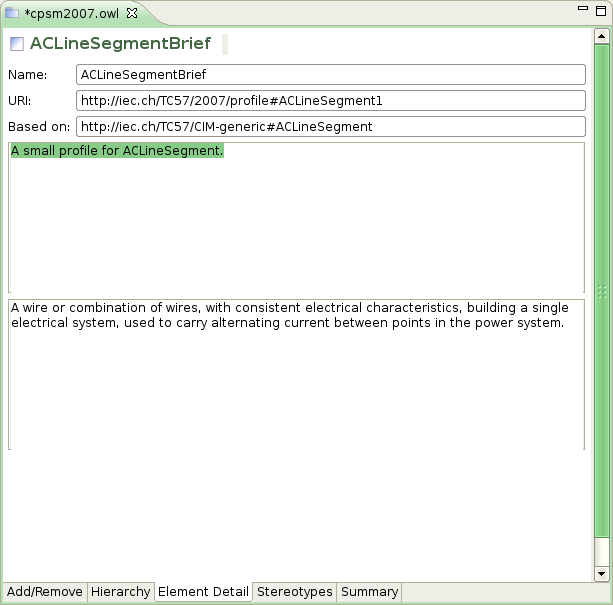

Description Tab
The Description tab shows the name and descriptions of the element selected in the Outline view. It is where you give a profile element its own name and its own description, alongside the description the schema already provides.

Placeholder from the legacy help, to be replaced: the Description tab with a class selected, showing the name, the profile's own description and the schema's description. In this older release the tab was labelled Element Detail and also showed the URI and Based on fields.
Fields
| Field | Shows |
|---|---|
| Name | The element's name in the profile. Changing it renames the element in the profile only; the schema is not changed. This is how a class profiled more than once gets a distinct name for each profile of it (see Multiple Profiles). |
| Profile Description | The profile's own description of the element. It is stored in the profile and carried into the schemas and documentation generated from it. It cannot be edited for an enumeration value. |
| Schema Description | The description of the element in the schema, for reference. It is read only. |
| Description of Type | For an attribute or association, the description of its type class, shown only when it differs from the description of the property itself. It is read only. |
Text typed into Profile Description is stored in the profile when you leave the field, and saved to disk when you save the profile.
Description and Documentation
For longer explanations written in AsciiDoc, use the Documentation tab. The Profile Description is a short plain-text description of the element; the Documentation tab holds the fuller text that the AsciiDoctor builders publish.